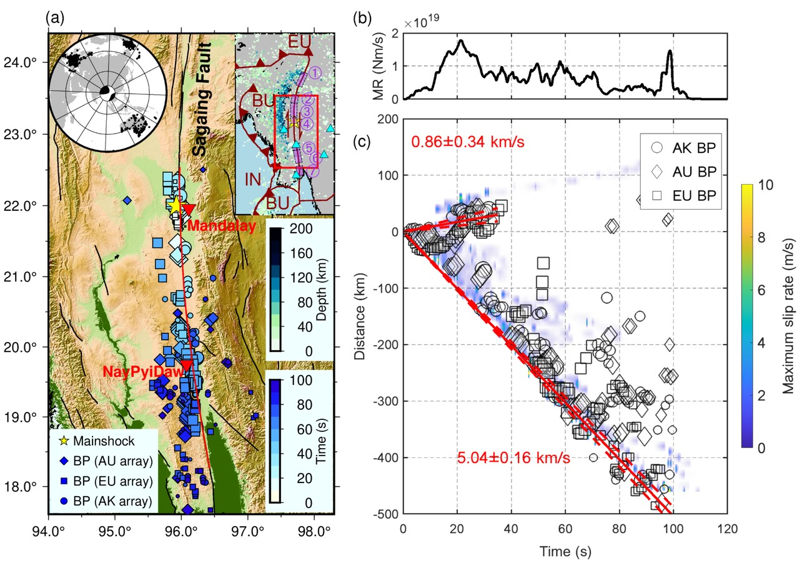

Rupture physics
Rupture physics & supershear earthquakes
Most earthquake ruptures propagate below the shear-wave speed. A few run faster, and those supershear ruptures carry a Mach front of strong shaking far from the fault. We measure rupture speed with slowness-enhanced back-projection and far-field Rayleigh Mach waves, and ask which fault properties let a rupture become and stay supershear.
What happens when a rupture outruns the shear waves
Every point on the fault that slips radiates P and S waves. When the rupture front is slower than the S waves, the wavefronts spread ahead of it. When it is faster, the S wavefronts pile up behind the front into a Mach cone, much like the bow wave of a boat, and the shaking it carries decays slowly with distance. Move the slider to change the rupture speed Vr.
Rupture front and S-wave Mach front
Kinematic illustrationHow common is supershear?
Before 2022 only about a dozen supershear earthquakes had been reported convincingly, most of them on continents, which left the impression that they are rare and rarer still beneath the ocean. Bao et al. (2022) searched systematically through large shallow strike-slip earthquakes since 2000 (86 events), combining slowness-enhanced back-projection with far-field Rayleigh Mach-wave identification, and reported four previously undocumented oceanic supershear earthquakes.
Oceanic supershear earthquakes turned out to be as frequent as continental ones, and at least 14% of Mw ≥ 6.7 shallow strike-slip earthquakes are supershear. The paper attributes this to a larger seismogenic width, the bimaterial effect at oceanic–continental boundaries, and dynamic weakening mechanisms that promote both the transition to supershear and its propagation. The globe on the home page shows every event of the survey.
Palu 2018: supershear from the start
Supershear ruptures observed in the laboratory and in large strike-slip events often begin below the shear-wave speed and transition later. The 2018 Mw 7.5 Palu, Indonesia earthquake did not: slowness-enhanced back-projection of teleseismic data from several arrays gives a sustained rupture speed of about 4.1 km/s from initiation to the end, despite large bends of the fault, and the rupture path agrees with the surface trace mapped from sub-pixel correlation of radar images. Far-field Rayleigh Mach waves in regional seismograms confirm the supershear speed.
The short or absent transition can be explained by high initial shear stress or a short critical slip-weakening distance, promoted by fault roughness near the hypocentre. That the rupture stayed at a speed considered unstable in theory (below the Eshelby speed) may reflect a damaged fault zone (Bao et al., 2019, Nature Geoscience).
Mandalay 2025: a 450-kilometre supershear rupture
Joint seismic and geodetic analysis shows that the 28 March 2025 Myanmar earthquake ruptured about 530 km of the Sagaing Fault, with sustained supershear propagation over about 450 km of its southern branch. Far-field Mach waves and near-field ground motion confirm the supershear speed. Satellite imagery shows severe building collapse and soil liquefaction along the rupture. The sustained supershear propagation was favoured by the straight fault geometry, a long interseismic quiescence, a favourable energy ratio, and a strong bimaterial contrast across the fault (Xu et al., 2025, Science). The back-projection radiators and the slip model of this event can be played on the back-projection and finite-fault pages.

A subshear counterpart: Kahramanmaraş 2023
The Mw 7.8 Kahramanmaraş earthquake started on the Narlı Fault and then propagated 120 km northeast at 3.05 km/s and 200 km southwest at 3.11 km/s along the East Anatolian Fault, an overall subshear rupture confirmed by Mach-wave analysis. The unexpectedly large slip on some segments suggests a supercycle lasting at least 900 years (Xu et al., 2023, Commun. Earth Environ.).
Complex ruptures
High-resolution imaging keeps finding ruptures that do not stay on one plane or go in one direction.
- The 2012 Mw 8.6 off-Sumatra earthquake ruptured four fault planes in an orthogonal pattern, branching onto faults under compressional stress (Meng et al., 2012, Science).
- The 2015 Mw 8.3 Illapel rupture split around a patch and encircled it (Meng et al., 2018, EPSL).
- The 2016 Kaikōura earthquake cascaded through a transpressional fault system (Xu et al., 2018, JGR).
- The 2024 Noto earthquake initiated twice and encircled a fault asperity at the edge of a long swarm (Xu et al., 2024, Science).
- The 2024 Mw 7.4 Hualien earthquake unzipped a conjugate fault system (Xu et al., 2025, GRL).
Ongoing work includes the 2026 Venezuela earthquake (manuscript submitted), studied with multi-array back-projection and joint inversion.
Key papers
- 2025
- 2025
- 2023Communications Earth & Environment 4, 379
- 2022Nature Geoscience 15, 942–949
- 2019Nature Geoscience 12, 200–205
- 2012